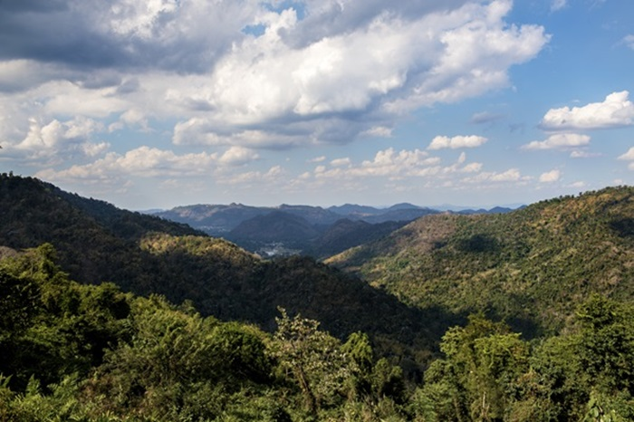

O agronegócio, enquanto setor crucial para a economia global e a segurança alimentar, também tem um impacto ambiental considerável, refletindo-se em várias áreas que exigem atenção e soluções sustentáveis. Entre os principais problemas está o desmatamento, especialmente em regiões tropicais como a Amazônia, onde a expansão de áreas agrícolas para cultivo de grãos e pastagens para pecuária frequentemente resulta na destruição de grandes áreas de floresta. Esse processo reduz a biodiversidade, elimina habitats essenciais para muitas espécies e afeta o ciclo global do carbono, já que as florestas desempenham um papel crucial na absorção de dióxido de carbono.
Impactos ambiental do agronegócio
Além do desmatamento, a degradação do solo é uma consequência significativa das práticas intensivas no agronegócio. O cultivo contínuo sem rotação de culturas, junto ao uso excessivo de fertilizantes e pesticidas, pode comprometer a fertilidade do solo e torná-lo mais suscetível à erosão. Esse fenômeno não só diminui a produtividade das terras agrícolas, como também contribui para a sedimentação dos cursos d'água, prejudicando a qualidade da água e os habitats aquáticos.
Outro problema relevante é a poluição das águas. O uso de grandes quantidades de fertilizantes e pesticidas pode levar ao escoamento desses produtos químicos para rios, lagos e lençóis freáticos, causando poluição e eutrofização. Esse processo resulta em crescimento excessivo de algas, que reduz o oxigênio na água e prejudica a vida aquática. Adicionalmente, o manejo inadequado dos dejetos animais pode contaminar fontes de água com patógenos e nutrientes, agravando o problema.
O impacto do agronegócio nas mudanças climáticas também é significativo. A agricultura e a pecuária são responsáveis por uma parte substancial das emissões de gases de efeito estufa, como metano, óxido nitroso e dióxido de carbono. O metano é liberado pela digestão dos ruminantes, enquanto o óxido nitroso vem da aplicação de fertilizantes. Essas emissões contribuem para o aquecimento global, alterando o clima e exacerbando eventos climáticos extremos.
O uso intensivo de recursos hídricos é outro desafio importante. A irrigação de culturas e a criação de animais demandam grandes quantidades de água, e em regiões onde esse recurso é escasso, a alta demanda pode levar ao esgotamento dos recursos hídricos. A irrigação excessiva pode ainda causar problemas como a salinização do solo, que compromete a produtividade agrícola e altera os ecossistemas locais.
A poluição do solo e da água por produtos químicos utilizados na agricultura pode ter impactos adversos na saúde humana e ambiental. Resíduos de pesticidas e fertilizantes podem se acumular, afetando a qualidade dos alimentos e a saúde das pessoas, além de prejudicar a saúde dos trabalhadores agrícolas e das comunidades próximas.
Apesar desses desafios, há um crescente movimento no agronegócio para adotar práticas mais sustentáveis. Técnicas como a agricultura de conservação, que inclui a rotação de culturas e o uso eficiente de fertilizantes, visam proteger e recuperar os recursos naturais. A inovação tecnológica e a implementação de políticas públicas que incentivem práticas agrícolas responsáveis são fundamentais para mitigar os impactos ambientais. Essas abordagens buscam equilibrar a necessidade de produzir alimentos com a responsabilidade de preservar o meio ambiente, promovendo um futuro mais sustentável para o agronegócio e para o planeta.
